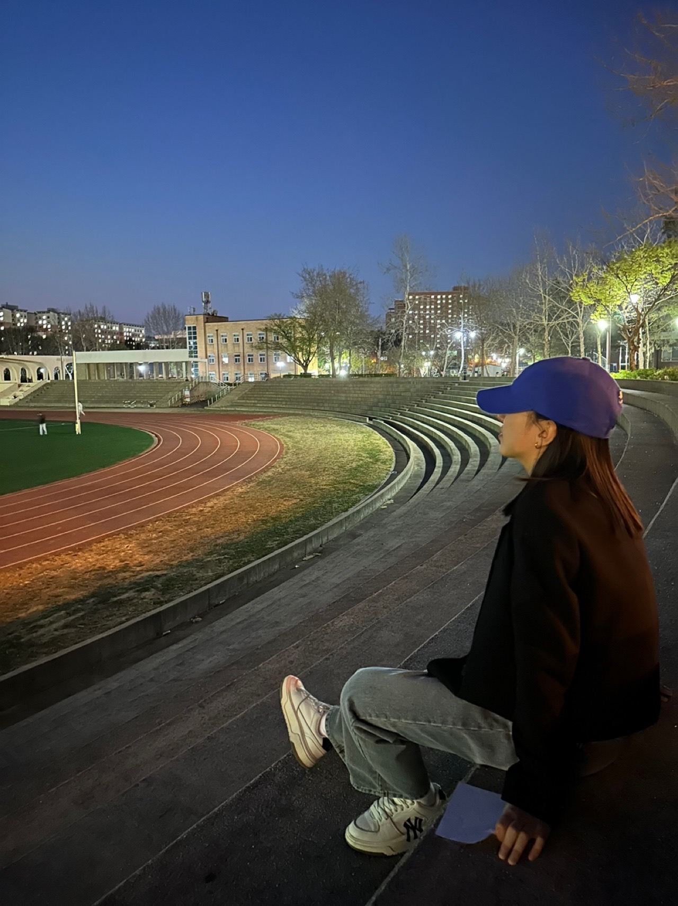

About Me

이름 임서영
생년월일 2003.03.04
E-mail standyoung03@naver.com
blog https://m.blog.naver.com/standyoung03
학력사항
광주 숭일고등학교(졸업)
전북대학교 스마트팜학과(재학)
관심분야 IT, S/W
코딩 HTML, CSS, JavaScript, Python
좋아하는 것
- 딸기요거트스무디
- 떡볶이
- 고기
- 아무것도 안하고 침대에 누워있기
- 강아지 발바닥 소리
- 초겨울에 햇빛쐬기
- 휴강
- 헬스장에 아무도 없을 때
- 페브리즈 상쾌한 향
싫어하는 것
- 시금치를 제외한 모든 초록색 음식(특히 파프리카)
- 버섯
- 해산물
- 알코올과 니코틴
- 마라탕
- 난 아무 잘못도 안했는데 사납게 짖는 강아지
- 새로 산 내 옷이 별로라고 해놓고 나중에 빌려주라고 하는 행위
- 인도로 지나가는 오토바이
- 집에 벌레랑 단둘이 있는 상황(이 경우 벌레에게 집을 양도해주고 집에서 나옴)
- 다리가 5개 이상인 생명체(상상만 해도 끔찍)
- 비오는 날 밖에 나가서 신발 젖기
- 눈 오고 3일 후 도로(미끄럽고 게다가 얼음 밟으면 신발 젖음)
- 여름에 1분 이상 하는 유산소 운동(=겨울에 1시간 내내 하는 스쿼트)
- 치과 마취
- 환절기
- 배차간격 30분 이상인 버스 눈 앞에서 놓치기
- 곰팡이
- 진흙
- 10분 뒤에 하려 했는데 듣는 잔소리
- 5살 이상 13살 이하의 아이와 1시간 이상 단둘이 있어야 하는 상황
- 고데기 하고 밖에 나오자 마자 날 마주하는 바람
- 비오는데 우산 안들고 밖에 나가서 편의점에서 구입한 5번째 우산
- 핑크색
- 노진구
- 비둘기